Circuitos Integrados Digitales
Introducción
DigitalLos circuitos son circuitos que tratan con señales restringidas a los límites extremos de cero y cierta cantidad total. Esto contrasta concosa análogaCircuitos en los que las señales pueden variar continuamente entre los límites impuestos por la tensión de alimentación y las resistencias del circuito. Estos circuitos se utilizan en operaciones lógicas "verdadero/falso" y en computación digital.
Los circuitos de este capítulo utilizanIC, ocircuito integrado, componentes. Estos componentes son en realidad redes de componentes interconectados fabricados en una única oblea de material semiconductor. Los circuitos integrados que proporcionan una multitud de funciones prediseñadas están disponibles a un costo muy bajo, lo que beneficia tanto a estudiantes como a aficionados y diseñadores de circuitos profesionales. La mayoría de los circuitos integrados proporcionan la misma funcionalidad que los circuitos semiconductores "discretos" con niveles más altos de confiabilidad y a una fracción del costo.
Los circuitos en este capítulo utilizarán principalmenteCMOStecnología, ya que esta forma de diseño de IC permite una amplia gama de voltaje de suministro de energía manteniendo niveles de consumo de energía generalmente bajos. Aunque los circuitos CMOS son susceptibles a sufrir daños por electricidad estática (los altos voltajes perforarán las barreras aislantes de los transistores MOSFET), los circuitos integrados CMOS modernos son mucho más tolerantes a las descargas electrostáticas que los circuitos integrados CMOS del pasado, lo que reduce el riesgo de fallo del chip por mal manejo. El manejo adecuado de CMOS implica el uso de espuma antiestática para el almacenamiento y transporte de los circuitos integrados, y medidas para evitar que se acumule carga estática en su cuerpo (uso de una muñequera con conexión a tierra o contacto frecuente con un objeto conectado a tierra).
Circuitos que utilizanTTLLa tecnología requiere un voltaje de suministro de energía regulado de 5 voltios y no tolerará ninguna desviación sustancial de este nivel de voltaje. Todos los circuitos TTL de este capítulo estarán adecuadamente etiquetados como tales y se espera que conozca sus requisitos únicos de suministro de energía.
Al construir circuitos digitales utilizando "chips" de circuitos integrados, se recomienda encarecidamente utilizar una placa con conexiones de "riel" de fuente de alimentación a lo largo. Estos son conjuntos de orificios en la placa de pruebas que son eléctricamente comunes a lo largo de toda la placa. Conecte uno al terminal positivo de una batería y el otro al terminal negativo, y la alimentación de CC estará disponible para cualquier área de la placa mediante conexión a través de cables de puente cortos:
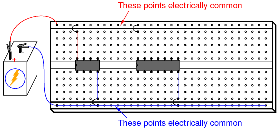
Dado que muchos de estos circuitos integrados tienen terminales de "reinicio", "habilitación" y "deshabilitación" que necesitan mantenerse en un estado "alto" o "bajo", sin mencionar el VDD(o VCC) y terminales de alimentación a tierra que requieren conexión a la fuente de alimentación, es muy útil tener ambos terminales de la fuente de alimentación fácilmente disponibles para la conexión en cualquier punto a lo largo de la longitud de la placa.
La mayoría de las placas que he visto tienen estos orificios para "rieles" de fuente de alimentación, pero algunas no. Hasta este punto, he estado ilustrando circuitos usando una placa que carece de esta característica, solo para mostrar que no es absolutamente necesario. Sin embargo, los circuitos digitales parecen requerir más conexiones a la fuente de alimentación que otros tipos de circuitos de placa, lo que hace que esta característica sea más que una simple conveniencia.
Basic gate function
PIEZAS Y MATERIALES
- 4011 quad NAND gate (Radio Shack catalog # 276-2411)
- Interruptor DIP de ocho posiciones (catálogo de Radio Shack # 275-1301)
- LED de gráfico de barras de diez segmentos (catálogo de Radio Shack # 276-081)
- Una batería de 6 voltios
- Dos resistencias de 10 kΩ
- Tres resistencias de 470 Ω
¡Precaución!El 4011 IC es CMOS y, por lo tanto, sensible a la electricidad estática.
REFERENCIAS CRUZADAS
Lecciones en circuitos eléctricos, Volumen 4, capítulo 3: "Puertas lógicas"
OBJETIVOS DE APRENDIZAJE
- Propósito de una resistencia "desplegable"
- Cómo determinar experimentalmente la tabla de verdad de una puerta.
- Cómo conectar puertas lógicas entre sí
- Cómo crear diferentes funciones lógicas mediante el uso de puertas NAND
DIAGRAMA ESQUEMÁTICO
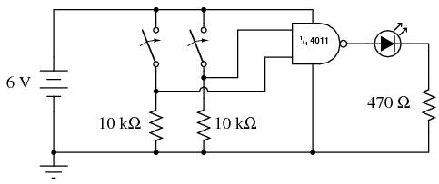
ILUSTRACIÓN
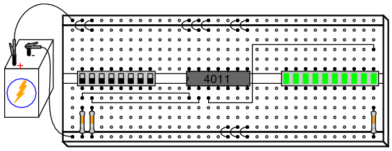
INSTRUCCIONES
Para comenzar, conecte una única puerta NAND a dos interruptores de entrada y un LED, como se muestra. Al principio, el uso de un interruptor de 8 posiciones y un gráfico de barras LED de 10 segmentos puede parecer excesivo, ya que sólo se necesitan dos interruptores y un LED para mostrar el funcionamiento de una única puerta NAND. Sin embargo, la presencia de esos interruptores y LED adicionales hace que sea muy conveniente expandir el circuito y ayuda a que el diseño del circuito sea limpio y compacto.
Se recomienda encarecidamente tener disponible una hoja de datos para el chip 4011 cuando construya su circuito. ¡No te limites a seguir la ilustración que se muestra arriba! Es importante que desarrolle la habilidad de leer hojas de datos, especialmente diagramas de "pinout", al conectar terminales IC a otros elementos del circuito. El diagrama de conexión de la hoja de datos es una información esencial. Aquí se muestra mi propia interpretación de lo que muestra cualquier hoja de datos 4011:
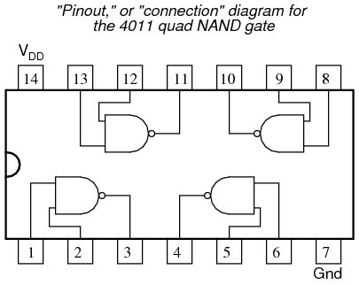
En la ilustración de la placa de pruebas, he mostrado el circuito construido usando la puerta NAND inferior izquierda: los pines 1 y 2 son las entradas, y el pin 3 es la salida. Los pines # 14 y 7 conducen energía CC a los cuatro circuitos de compuerta dentro del chip IC, "VDD" representa el lado positivo de la fuente de alimentación (+V) y "Gnd" representa el lado negativo de la fuente de alimentación (-V), o tierra. A veces, el terminal negativo de la fuente de alimentación estará etiquetado como "VSS" en lugar de "Gnd" en una hoja de datos, pero significa lo mismo.
Los circuitos lógicos digitales no utilizan fuentes de alimentación divididas como lo hacen los amplificadores operacionales. Sin embargo, al igual que los circuitos de amplificador operacional, la tierra sigue siendo el punto de referencia implícito para todas las mediciones de voltaje. Si tuviera que hablar de una señal "alta" presente en un determinado pin del chip, significaría que había voltaje total entre ese pin y el lado negativo de la fuente de alimentación (tierra).
Observe cómo todas las entradas de las puertas no utilizadas dentro del chip 4011 están conectadas a VDDo tierra. Esto no es un error, sino un acto de diseño intencional. Dado que el 4011 es un circuito integrado CMOS, las entradas del circuito CMOS se dejan desconectadas (flotante) puede asumir cualquier nivel de voltaje simplemente interceptando una carga eléctrica estática de un objeto cercano, dejar las entradas flotantes significa que esas puertas no utilizadas pueden recibir cualquier combinación aleatoria de señales "altas" y "bajas".
¿Por qué es esto indeseable si no utilizamos esas puertas? ¿A quién le importa qué señales reciban, si no hacemos nada con sus salidas? El problema es que, si aparecen señales de voltaje estático en las entradas de las puertas que no son completamente "altas" o completamente "bajas", los transistores internos de las puertas pueden comenzar a encenderse de tal manera que consuman una corriente excesiva. En el peor de los casos, esto podría provocar daños en el chip. En el mejor de los casos, significa un consumo excesivo de energía. Poco importa si optamos por conectar estas entradas de puerta no utilizadas en "alta" (VDD) o "bajo" (tierra), siempre que los conectemos a uno de esos dos lugares. En la ilustración de la placa de pruebas, muestro todas las entradas superiores conectadas a VDD, y todas las entradas inferiores (de las puertas no utilizadas) conectadas a tierra. ¡Esto se hizo simplemente porque los orificios del riel de suministro de energía estaban más cerca y no requerían cables de puente largos!
Tenga en cuenta que ninguna de las puertas no utilizadassalidashan sido conectados a VDDo tierra, ¡y por una buena razón! Si hiciera eso, podría estar obligando a una puerta a asumir el estado de salida opuesto al que intenta lograr, lo cual es una forma complicada de decir que habría creado un cortocircuito. Imagine una puerta que se supone que genera un nivel lógico "alto" (para una puerta NAND, esto sería cierto si alguna de sus entradas fuera "baja"). Si dicha puerta tuviera su terminal de salida directamente conectado a tierra, nunca podría alcanzar un estado "alto" (siendo eléctricamente común a tierra a través de la conexión del cable de puente). En cambio, su transistor de salida superior (canal P) se activaría en vano, suministrando la corriente máxima a una carga inexistente. ¡Es muy probable que esto dañe la puerta! Los terminales de salida de puerta, por su propia naturaleza, generan sus propios niveles lógicos y nunca "flotan" de la misma manera que lo hacen las entradas de puerta CMOS.
Las dos resistencias de 10 kΩ se colocan en el circuito para evitar condiciones de entrada flotante en la puerta utilizada. Con un interruptor cerrado, la entrada respectiva se conectará directamente a VDDy por lo tanto ser "alto". Con un interruptor abierto, los 10 kΩ "desplegable"La resistencia proporciona una conexión resistiva a tierra, lo que garantiza un estado "bajo" seguro en el terminal de entrada de la puerta. De esta manera, la entrada no será susceptible a voltajes estáticos parásitos.
Con la puerta NAND conectada a los dos interruptores y un LED como se muestra, está listo para desarrollar una "tabla de verdad" para la puerta NAND. Incluso si ya sabes cómo es una tabla de verdad de una puerta NAND, este es un buen ejercicio de experimentación: descubrir los principios de comportamiento de un circuito por inducción. Dibuja una tabla de verdad en una hoja de papel como esta:
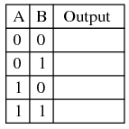
Las columnas "A" y "B" representan los dos interruptores de entrada, respectivamente. Cuando el interruptor está encendido, su estado es "alto" o 1. Cuando el interruptor está apagado, su estado es "bajo" o 0, según lo garantiza su resistencia desplegable. La salida de la puerta, por supuesto, está representada por el LED: si está encendido (1) o apagado (0). Después de colocar los interruptores en cada combinación posible de estados y registrar el estado del LED, compare la tabla de verdad resultante con lo que debería ser la tabla de verdad de una puerta NAND.
Como puede imaginar, este circuito de placa de pruebas no se limita a probar puertas NAND. Se puede probar cualquier tipo de puerta con dos interruptores, dos resistencias desplegables y un LED para indicar el estado de la salida. Sólo asegúrese de volver a verificar el diagrama de "pinout" del chip antes de sustituirlo pin por pin en lugar del 4011. ¡No todos los chips de compuerta "quad" tienen las mismas asignaciones de pin!
Una mejora que quizás desee realizar en este circuito es asignar un par de LED para indicar el estado de la entrada, además del LED asignado para indicar la salida. Esto hace que la operación sea un poco más interesante de observar y tiene el beneficio adicional de indicar si un interruptor no cierra (o abre) mostrando elverdaderoseñal de entrada a la puerta, en lugar de obligarlo a inferir el estado de entrada desde la posición del interruptor:
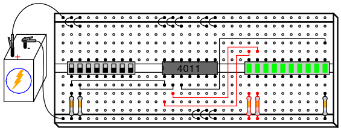
NOR gate S-R latch
PIEZAS Y MATERIALES
- 4001 quad NOR gate (Radio Shack catalog # 276-2401)
- Interruptor DIP de ocho posiciones (catálogo de Radio Shack # 275-1301)
- LED de gráfico de barras de diez segmentos (catálogo de Radio Shack # 276-081)
- Una batería de 6 voltios
- Dos resistencias de 10 kΩ
- Dos resistencias de 470 Ω
- Dos resistencias de 100 Ω
¡Precaución!El 4001 IC es CMOS y, por lo tanto, sensible a la electricidad estática.
REFERENCIAS CRUZADAS
Lecciones en circuitos eléctricos, Volumen 4, capítulo 3: "Puertas lógicas"
Lecciones en circuitos eléctricos, Volumen 4, capítulo 10: "Multivibradores"
OBJETIVOS DE APRENDIZAJE
- Los efectos de la retroalimentación positiva en un circuito digital.
- ¿Qué se entiende por estado "no válido" de un circuito de retención?
- ¡Quécondición de carreraestá en un circuito digital
- La importancia de niveles de voltaje de señal CMOS "altos" válidos
DIAGRAMA ESQUEMÁTICO
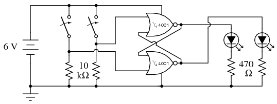
ILUSTRACIÓN
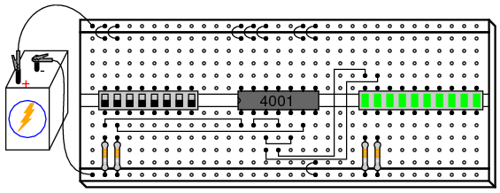
INSTRUCCIONES
El circuito integrado 4001 es una puerta CMOS cuádruple NOR, idéntica en asignaciones de pines de entrada, salida y fuente de alimentación a la puerta cuádruple NAND 4011. Su diagrama de "pinout" o "conexión" es el siguiente:
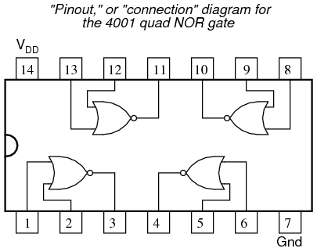
Cuando dos puertas NOR están interconectadas como se muestra en el diagrama esquemático, habrá retroalimentación positiva de la salida a la entrada. Es decir, la señal de salida tiende a mantener la puerta en su último estado de salida. Al igual que en los circuitos de amplificador operacional, la retroalimentación positiva creahistéresis. Esta tendencia del circuito a permanecer en su último estado de salida le da una especie de "memoria". De hecho, existen tecnologías de memoria de computadora de estado sólido basadas en circuitos como este.
Si designamos el interruptor izquierdo como entrada "Set" y el interruptor derecho como "Reset", el LED izquierdo será la salida "Q" y el LED derecho la salida "Q-not". Con la entrada Set "alta" (encendido) y la entrada Reset "baja", Q pasará a "alta" y Q-not pasará a "baja". Esto se conoce como elsetestado del circuito. Hacer que la entrada Restablecer sea "alta" y la entrada Establecer "baja" invierte el estado de salida del circuito de bloqueo: Q "bajo" y Q-no "alto". Esto se conoce como elreiniciarestado del circuito. Si ambas entradas se colocan en el estado "bajo", las salidas Q y Q-not del circuito permanecerán en sus últimos estados, "recordando" sus configuraciones anteriores. Esto se conoce como elcerradoestado del circuito.
Debido a que las salidas han sido designadas "Q" y "Q-not", se da a entender que sus estados siempre serán complementarios (opuestos). Por lo tanto, si sucediera algo que obligara a ambas salidas a lamismoestado, nos inclinaríamos a llamar a ese modo del circuito "inválido". Esto es exactamente lo que sucederá si hacemos que las entradas Set y Reset sean "altas": tanto las salidas Q como Q-not serán forzadas al mismo estado lógico "bajo". Esto se conoce como elinválido or ilegalestado del circuito, no porque algo haya salido mal, sino porque las salidas no han cumplido con las expectativas establecidas por sus etiquetas.
Dado que el estado "bloqueado" es una condición histerética mediante la cual se "recuerdan" los últimos estados de salida, uno podría preguntarse qué sucederá si el circuito se enciende de esta manera, conno hay estado previo para sostener. Para experimentar, coloque ambos interruptores en sus posiciones de apagado, bajando las entradas Set y Reset, luego desconecte uno de los cables de la batería de la placa. Luego, establezca y rompa rápidamente el contacto entre el cable de la batería y su punto de conexión adecuado en la placa, observando el estado de los dos LED a medida que el circuito se enciende una y otra vez:
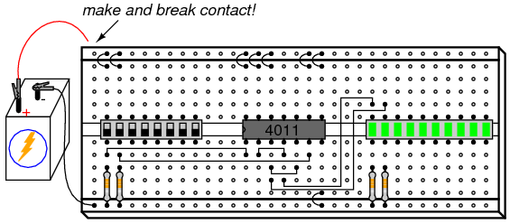
Cuando un circuito de pestillo como este se activa hasta su estado "bloqueado", las puertas compiten entre sí por el control. Dadas las entradas "bajas", ambas puertas intentan emitir señales "altas". Si una de las puertas alcanza su estado de salida "alto" antes que la otra, ese estado "alto" se retroalimentará a la entrada de la otra puerta para forzar su salida a "baja", y la puerta más rápida gana la carrera.
Invariablemente, una puerta gana la carrera, debido a variaciones internas entre las puertas en el chip y/o resistencias y capacitancias externas que actúan para retrasar una puerta más que la otra. Lo que esto suele significar es que el circuito tiende a encenderse en el mismo modo, una y otra vez. Sin embargo, si es persistente en sus ciclos de encendido/apagado, debería ver al menos unas cuantas veces que el circuito de bloqueo se enciende bloqueado en elopuestoestado de lo normal.
Las condiciones de carrera generalmente son indeseables en cualquier tipo de sistema, ya que conducen a un funcionamiento impredecible. Pueden ser particularmente difíciles de localizar, como muestra este experimento, debido a la imprevisibilidad que crean. Imagine un escenario, por ejemplo, en el que una de las dos puertas NOR actuara excepcionalmente lentamente debido a un defecto en el chip. Esta desventaja haría que la otra puerta ganara la carrera de encendido cada vez. En otras palabras, el circuito será muy predecible al encenderse con ambas entradas "bajas". Sin embargo, supongamos que el chip inusual fuera reemplazado por uno con puertas más igualadas, o por un chip donde lasotroLa puerta NOR fue consistentemente más lenta. Se supone que el comportamiento normal del circuito no cambia cuando se reemplaza un componente, pero si se dan condiciones de carrera, un cambio de componentes puede muy bien lograr precisamente eso.
Debido a la tendencia inherente a la carrera de un pestillo S-R, no se debe diseñar un circuito con la expectativa de un estado de encendido constante, sino más bien utilizar medios externos para "forzar" la carrera de modo que la puerta deseada siempre "gane".
Una modificación interesante para probar en este circuito es reemplazar una de las resistencias de "caída" del LED de 470 Ω por una unidad de menor valor, como 100 Ω. El efecto obvio de esta alteración será un aumento del brillo del LED, a medida que se permita el paso de más corriente. También se producirá un efecto no tan obvio, y es este efecto el que tiene un gran valor de aprendizaje. Intente reemplazar una de las resistencias de 470 Ω con una resistencia de 100 Ω y opere los interruptores de señal de entrada a través de las cuatro combinaciones de configuración posibles, observando el comportamiento del circuito.
Debe tener en cuenta que el circuito se niega a bloquearse en uno de sus estados (ya sea Establecer o Restablecer), pero solo en el otro estado, cuando ambos interruptores de entrada están configurados en "bajo" (el modo "bloqueo"). ¿Por qué es esto? Tome un voltímetro y mida el voltaje de salida de la puerta cuya salida es "alta" cuando ambas entradas son "bajas". Tenga en cuenta esta indicación de voltaje, luego configure los interruptores de entrada de tal manera que elotroSe fuerza el estado (ya sea Restablecer o Establecer) y medir el voltaje de salida de la otra puerta cuando su salida sea "alta". Observe la diferencia entre los niveles de voltaje de salida de las dos puertas, una puerta cargada por un LED con una resistencia de 470 Ω y la otra cargada por un LED con una resistencia de 100 Ω. El cargado con la carga "más pesada" (resistencia de 100 Ω) será mucho menor: ¡tanto menos que este voltaje no será interpretado por la entrada de la otra puerta NOR como una señal "alta" en absoluto cuando se retroalimenta! Todas las puertas lógicas tienen rangos de voltaje de señal de entrada "alto" y "bajo" permitidos, y si el voltaje de una señal digital cae fuera de este rango permitido, es posible que la puerta receptora no lo interprete adecuadamente. En un circuito de enclavamiento como este, que depende de una señal sólida "alta" retroalimentada desde la salida de una puerta a la entrada de la otra, una señal "débil" no podrá mantener la retroalimentación positiva necesaria para mantener el circuito enclavado en uno de sus estados.
Ésta es una de las razones por las que prefiero el uso de un voltímetro como "sonda" lógica para determinar los niveles de señales digitales, en lugar de una sonda lógica real con luces "altas" y "bajas". Una sonda lógica puede no indicar la presencia de una señal "débil", mientras que un voltímetro definitivamente lo hará mediante su indicación cuantitativa. Este tipo de problema, común en circuitos donde se mezclan diferentes "familias" de circuitos integrados (TTL y CMOS, por ejemplo), sólo se puede encontrar con equipos de prueba que proporcionen mediciones cuantitativas del nivel de la señal.
NAND gate S-R enabled latch
PIEZAS Y MATERIALES
- 4011 quad NAND gate (Radio Shack catalog # 276-2411)
- Interruptor DIP de ocho posiciones (catálogo de Radio Shack # 275-1301)
- LED de gráfico de barras de diez segmentos (catálogo de Radio Shack # 276-081)
- Una batería de 6 voltios
- Tres resistencias de 10 kΩ
- Dos resistencias de 470 Ω
¡Precaución!El 4011 IC es CMOS y, por lo tanto, sensible a la electricidad estática.
REFERENCIAS CRUZADAS
Lecciones en circuitos eléctricos, Volumen 4, capítulo 3: "Puertas lógicas"
Lecciones en circuitos eléctricos, Volumen 4, capítulo 10: "Multivibradores"
OBJETIVOS DE APRENDIZAJE
- Principio y función de un circuito de pestillo habilitado.
DIAGRAMA ESQUEMÁTICO
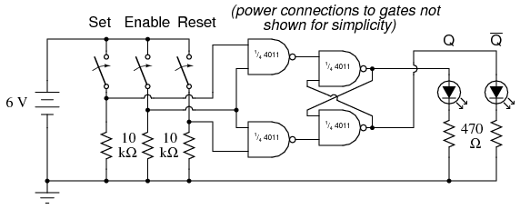
ILUSTRACIÓN
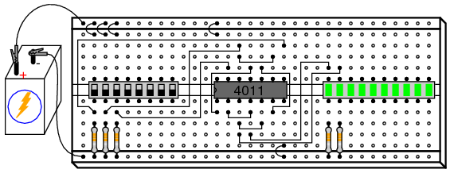
INSTRUCCIONES
Aunque este circuito utiliza puertas NAND en lugar de puertas NOR, su comportamiento es idéntico al del pestillo S-R de la puerta NOR (una entrada de configuración "alta" impulsa Q "alto" y una entrada de reinicio "alta" impulsa Q-no "alto"), excepto por la presencia de una tercera entrada: Habilitar. El propósito de la entrada Enable es habilitar o deshabilitar que las entradas Set y Reset tengan efecto sobre el estado de salida del circuito. Cuando la entrada Habilitar es "alta", el circuito actúa como el pestillo S-R de la puerta NOR. Cuando la entrada Enable está "baja", las entradas Set y Reset se desactivan y no tienen ningún efecto en las salidas, dejando el circuito en su estado bloqueado.
Este tipo de circuito de pestillo (también llamadopestillo S-R cerrado), puede construirse a partir de dos puertas NOR y dos puertas AND, pero el diseño de la puerta NAND es más fácil de construir ya que utiliza las cuatro puertas en un solo circuito integrado.
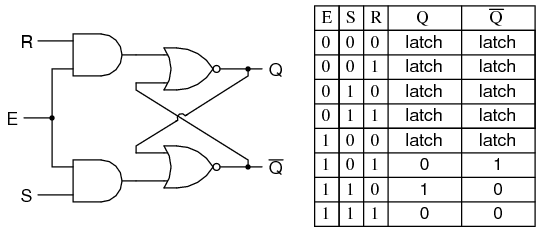
Flip-flop S-R con puertas NAND
PIEZAS Y MATERIALES
- 4011 quad NAND gate (Radio Shack catalog # 276-2411)
- 4001 quad NOR gate (Radio Shack catalog # 276-2401)
- Interruptor DIP de ocho posiciones (catálogo de Radio Shack # 275-1301)
- LED de gráfico de barras de diez segmentos (catálogo de Radio Shack # 276-081)
- Una batería de 6 voltios
- Tres resistencias de 10 kΩ
- Dos resistencias de 470 Ω
¡Precaución!El 4011 IC es CMOS y, por lo tanto, sensible a la electricidad estática.
Aunque la lista de piezas requiere una unidad LED de diez segmentos, la ilustración muestra que se utilizan dos LED individuales en su lugar. Esto se debe a la falta de espacio en mi placa para montar el conjunto del interruptor, dos circuitos integrados y el gráfico de barras. Si tiene espacio en su placa, no dude en utilizar el gráfico de barras como se indica en la lista de piezas y como se muestra en circuitos de pestillo anteriores.
REFERENCIAS CRUZADAS
Lecciones en circuitos eléctricos, Volumen 4, capítulo 3: "Puertas lógicas"
Lecciones en circuitos eléctricos, Volumen 4, capítulo 10: "Multivibradores"
OBJETIVOS DE APRENDIZAJE
- La diferencia entre un pestillo y un flip-flop
- Cómo construir un circuito "detector de pulsos"
- Conozca los efectos del "rebote" del contacto del interruptor en los circuitos digitales
DIAGRAMA ESQUEMÁTICO
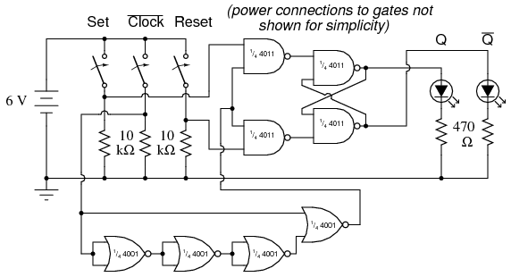
ILUSTRACIÓN
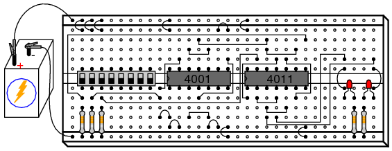
INSTRUCCIONES
La única diferencia entre uncerrado (or activado) pestillo y un flip-flop es que un flip-flop está habilitado solo en subida o bajadabordede una señal de "reloj", en lugar de durante toda la duración de una señal de habilitación "alta". Convertir un pestillo habilitado en un flip-flop simplemente requiere que se agregue un circuito "detector de pulso" a la entrada Habilitar, de modo que el flanco de un pulso de reloj genere un breve pulso de habilitación "alto":
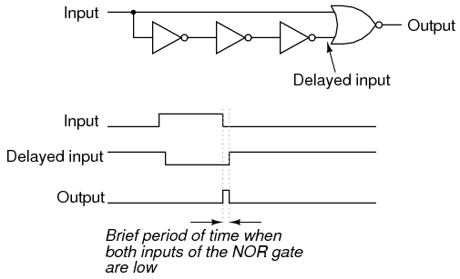
La única puerta NOR y las tres puertas inversoras crean este efecto aprovechando el tiempo de retardo de propagación de múltiples puertas en cascada. En este experimento, utilizo tres puertas NOR con entradas en paralelo para crear tres inversores, utilizando así las cuatro puertas NOR de un circuito integrado 4001:
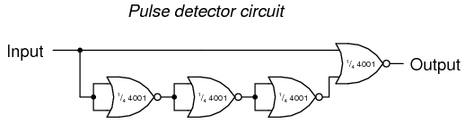
Normalmente, cuando se utiliza una puerta NOR como inversor, una entrada estaría conectada a tierra mientras la otra actúa como entrada del inversor, para minimizar la capacitancia de entrada y aumentar la velocidad. Aquí, sin embargo, la respuesta es lenta.deseado, por lo que pongo en paralelo las entradas NOR para crear inversores en lugar de utilizar el método más convencional.
Tenga en cuenta que este circuito detector de pulsos en particular produce un pulso de salida "alto" en cadaborde descendentede la señal de reloj (entrada). Esto significa que el circuito flip-flop debe responder a los estados de entrada Set y Reset sólo cuando el interruptor del medio se mueve de "on" a "off", no de "off" a "on".
Sin embargo, cuando construye este circuito, puede descubrir que las salidas responden a las señales de entrada Set y Reset duranteambostransiciones de la entrada del Reloj, no solo cuando se cambia de un estado "alto" a un estado "bajo". La razón de esto es el contacto.rebotar: el efecto de un interruptor mecánico que se abre y abre rápidamente cuando sus contactos se cierran por primera vez, debido a la colisión elástica de las almohadillas de contacto metálicas. En lugar de que el interruptor de reloj produzca una transición de señal única y limpia de bajo a alto cuando está cerrado, lo más probable es que haya varios "ciclos" de bajo-alto-bajo a medida que las almohadillas de contacto "rebotan" al accionarse de apagado a encendido. La primera transición de alto a bajo causada por el rebote activará el circuito detector de pulso, habilitando el pestillo S-R para ese momento, haciéndolo responder a las entradas Set y Reset.
Lo ideal, por supuesto, es que los interruptores estén perfectos y sin rebotes. Sin embargo, en el mundo real, el rebote de contactos es un problema muy común para los circuitos de compuertas digitales operados por entradas de interruptor y debe entenderse bien si se quiere superar.
LED sequencer
PIEZAS Y MATERIALES
- 4017 decade counter/divider (Radio Shack catalog # 276-2417)
- 555 timer IC (Radio Shack catalog # 276-1723)
- LED de gráfico de barras de diez segmentos (catálogo de Radio Shack # 276-081)
- Un interruptor SPST
- Una batería de 6 voltios
- 10 kΩ resistor
- 1 MΩ resistor
- 0.1 µF capacitor (Radio Shack catalog # 272-135 or equivalent)
- Condensador de acoplamiento, 0,047 a 0,001 µF
- Diez resistencias de 470 Ω
- Detector de audio con auriculares.
¡Precaución!El 4017 IC es CMOS y, por lo tanto, sensible a la electricidad estática.
Cualquier interruptor unipolar y unipolar es adecuado. Un interruptor de luz doméstico funcionará bien y está disponible en cualquier ferretería.
El detector de audio se utilizará para evaluar la frecuencia de la señal. Si tienes acceso a un osciloscopio, el detector de audio es innecesario.
REFERENCIAS CRUZADAS
Lecciones en circuitos eléctricos, Volumen 4, capítulo 3: "Puertas lógicas"
Lecciones en circuitos eléctricos, Volumen 4, capítulo 4: "Interruptores"
Lecciones en circuitos eléctricos, Volumen 4, capítulo 11: "Contadores"
OBJETIVOS DE APRENDIZAJE
- Uso de un circuito temporizador 555 para producir pulsos de "reloj" (astablemultivibrador)
- Uso de un circuito contador/divisor de décadas 4017 para producir una secuencia de pulsos
- Uso de un circuito contador/divisor de décadas 4017 para división de frecuencia
- Usar un divisor de frecuencia y un reloj (reloj) para medir la frecuencia
- Propósito de una resistencia "desplegable"
- Conozca los efectos del "rebote" del contacto del interruptor en los circuitos digitales
- Uso de un circuito temporizador 555 para "antirrebotar" un interruptor mecánico (monoestablemultivibrador)
DIAGRAMA ESQUEMÁTICO
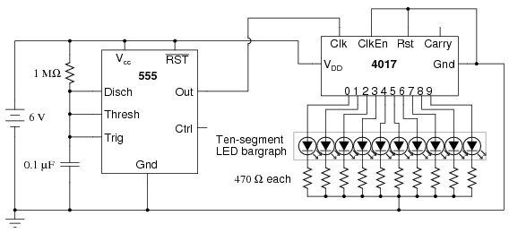
ILUSTRACIÓN
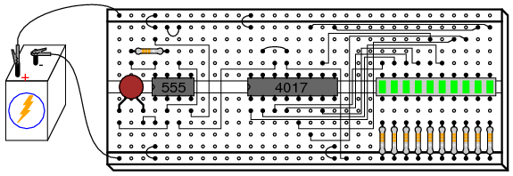
INSTRUCCIONES
El circuito integrado modelo 4017 es un contador CMOS con diez terminales de salida. Uno de estos diez terminales estará en un estado "alto" en un momento dado, mientras que todos los demás estarán en "bajo", lo que dará una secuencia de salida "uno de diez". Si se aplican pulsos de voltaje bajo a alto al terminal "reloj" (Clk) del 4017, incrementará su conteo, forzando la siguiente salida a un estado "alto".
Con un temporizador 555 conectado como un multivibrador (oscilador) astable de baja frecuencia, el 4017 recorrerá su secuencia de diez cuentas, iluminando cada LED, uno a la vez, y "reciclándose" de nuevo al primer LED. El resultado es una secuencia visualmente agradable de luces intermitentes. Siéntase libre de experimentar con valores de resistencia y capacitor en el temporizador 555 para crear diferentes velocidades de destello.
Intente desconectar el cable de puente que va desde el terminal "Reloj" del 4017 (pin n.° 14) al terminal de "Salida" del 555 (pin n.° 3) donde se conecta al chip del temporizador 555 y sostenga su extremo en la mano. Si hay suficiente "ruido" de línea eléctrica de 60 Hz a su alrededor, el 4017 lo detectará como una señal de reloj rápida, lo que hará que los LED parpadeen muy rápidamente.
Dos terminales en el chip 4017, "Restablecer" y "Habilitar reloj", se mantienen en un estado "bajo" mediante una conexión al lado negativo de la batería (tierra). Esto es necesario para que el chip cuente libremente. Si el terminal "Reset" se pone en "alto", la salida del 4017 se restablecerá a 0 (pin 3 en "alto", todos los demás pines de salida en "bajo"). Si "Habilitar reloj" se pone "alto", el chip dejará de responder a la señal del reloj y hará una pausa en su secuencia de conteo.
Si el terminal "Reset" del 4017 está conectado a uno de sus diez terminales de salida, su secuencia de conteo se acortará, otruncado. Puede experimentar con esto desconectando el terminal "Reset" de tierra y luego conectando un cable de puente largo al terminal "Reset" para una fácil conexión a las salidas en el gráfico de barras LED de diez segmentos. Observe cuántos (o pocos) LED se encienden con el "Reset" conectado a cualquiera de las salidas:
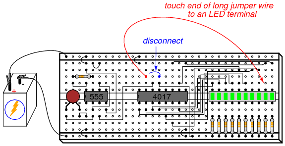
Los contadores como el 4017 se pueden utilizar como divisores de frecuencia digitales, para tomar una señal de reloj y producir un pulso que se produzca en algún factor entero de la frecuencia del reloj. Por ejemplo, si la señal de reloj del temporizador 555 es de 200 Hz y el 4017 está configurado para una secuencia de conteo completo (el terminal "Reset" conectado a tierra, dando un conteo completo de diez pasos), una señal con un período diez veces más largo (20 Hz) estará presente en cualquiera de los terminales de salida del 4017. En otras palabras, cada terminal de salida realizará un ciclouna vezpor cadatenCiclos de la señal del reloj: una frecuencia diez veces más lenta.
Para experimentar con este principio, conecte su detector de audio entre la salida 0 (pin #3) del 4017 y tierra, a través de un capacitor muy pequeño (0.047 µF a 0.001 µF). El condensador se utiliza únicamente para "acoplar" señales de CA, por lo que puede detectar pulsos de forma audible sin colocar una carga de CC (resistiva) en la salida del chip contador. Con el terminal "Reset" del 4017 conectado a tierra, tendrá una secuencia de conteo completo y escuchará un "clic" en los auriculares cada vez que se encienda el LED "0", correspondiente a 1/10 de la frecuencia de salida real del 555:
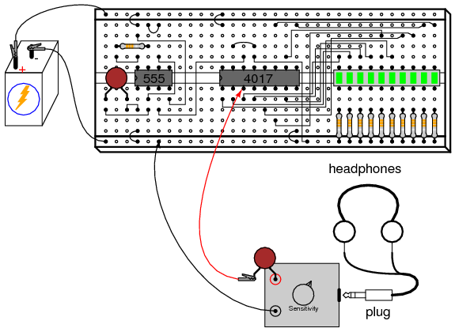
De hecho, conocer esta relación matemática entre los clics que se escuchan en los auriculares y la frecuencia del reloj nos permite medir la frecuencia del reloj con bastante precisión. Usando un cronómetro u otro reloj, cuente la cantidad de clics escuchados en un minuto completo mientras está conectado a la salida "0" del 4017. Usando una resistencia de 1 MΩ y un capacitor de 0,1 µF en el circuito de sincronización 555, y un voltaje de fuente de alimentación de 13 voltios (en lugar de 6), conté 79 clics en un minuto en mi circuito. Su circuito puede producir resultados ligeramente diferentes. Multiplica el número de pulsos contados en la salida "0" por 10 para obtener el número de ciclos producidos por el temporizador 555 durante ese mismo tiempo (mi circuito: 79 x 10 = 790 ciclos). Divida este número por 60 para obtener el número de ciclos del temporizador transcurridos en cada segundo (mi circuito: 790/60 = 13,17). Esta cifra final es la frecuencia del reloj en Hz.
Ahora, dejando una sonda de prueba del detector de audio conectada a tierra, tome la otra sonda de prueba (la que tiene el condensador de acoplamiento conectado en serie) y conéctela al pin n.º 3 del temporizador 555. El zumbido que escucha es la frecuencia del reloj indivisa:
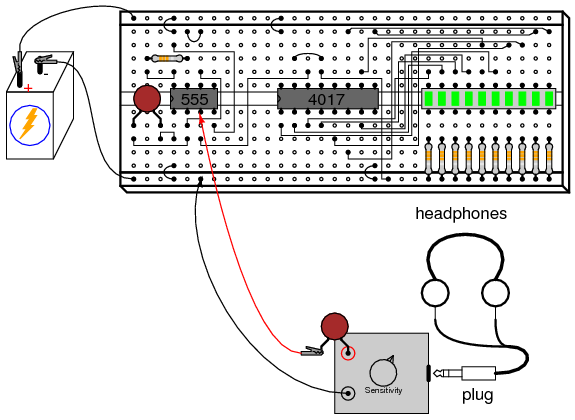
Al conectar el terminal "Reset" del 4017 a uno de los terminales de salida, se producirá una secuencia truncada. Si usamos el 4017 como divisor de frecuencia, esto significa que la frecuencia de salida será un factor diferente de la frecuencia del reloj: 1/9, 1/8, 1/7, 1/6, 1/5, 1/4, 1/3 o 1/2, dependiendo de a qué terminal de salida conectemos el cable de puente "Reset". Vuelva a conectar la sonda de prueba del detector de audio a la salida "0" del 4017 (pin 3) y conecte el puente del terminal "Reset" al sexto LED desde la izquierda en el gráfico de barras. Esto debería producir una relación de división de frecuencia de 1/5:
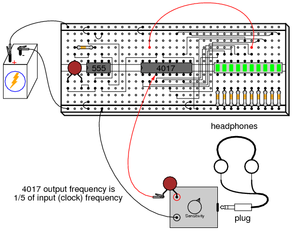
Contando nuevamente el número de clics escuchados en un minuto, debería obtener un número aproximadamente dos veces mayor que el contado con el 4017 configurado para una proporción de 1/10, porque 1/5 es una proporción dos veces mayor que 1/10. Si no obtienes un conteo que sea exactamente el doble de lo que obtuviste antes, es por un error inherente al método de conteo de ciclos: coordinar tu sentido del oído con la visualización de un cronómetro u otro dispositivo de cronometraje.
Intente reemplazar la resistencia de temporización de 1 MΩ en el circuito 555 por una de valor mucho menor, como 10 kΩ. Esto aumentará la frecuencia de reloj que impulsa el chip 4017. Utilice el detector de audio para escuchar la frecuencia dividida en el pin 3 del 4017, observando los diferentes tonos producidos al mover el cable puente "Reset" a diferentes salidas, creando diferentes relaciones de división de frecuencia. Vea si puede producir octavas dividiendo la frecuencia original por 2, luego por 4 y luego por 8 (cada octava descendente representa la mitad de la frecuencia anterior). Las octavas se distinguen fácilmente de otras frecuencias divididas por sus tonos similares al tono original.
Una última lección que se puede aprender de este circuito es la del "rebote" del contacto del interruptor. Para ello, necesitará un interruptor que proporcione señales de reloj al chip 4017, en lugar del temporizador 555. Vuelva a conectar el cable de puente "Reset" a tierra para permitir una secuencia de conteo completa de diez pasos y desconecte la salida del 555 del terminal de entrada "Reloj" del 4017. Conecte un interruptor en serie con un 10 kΩ.desplegableresistencia y conecte este conjunto a la entrada "Reloj" 4017 como se muestra:
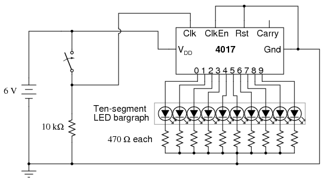
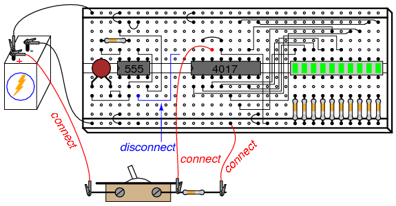
El propósito de una resistencia "pulldown" es proporcionar un estado lógico "bajo" definido cuando se abre el contacto del interruptor. Sin esta resistencia en su lugar, el cable de entrada "Reloj" del 4017 estaríaflotantecada vez que se abría el contacto del interruptor, dejándolo susceptible a interferencias de voltajes estáticos perdidos o "ruido" eléctrico, cualquiera de los dos era capaz de hacer que el 4017 contara aleatoriamente. Con la resistencia desplegable en su lugar, la entrada "Reloj" del 4017 tendrá una conexión definida, aunque resistiva, a tierra, proporcionando un estado lógico "bajo" estable que excluye cualquier interferencia de electricidad estática o "ruido" acoplado desde el cableado del circuito de CA cercano.
Accione el interruptor de encendido y apagado, observando la acción de los LED. Con cada transición de apagado a encendido, el 4017 debería incrementar una vez su conteo. Sin embargo, es posible que notes algún comportamiento extraño: a veces, la secuencia de LED "saltará" uno o incluso varios pasos con un solo cierre del interruptor. ¿Por qué es esto? Se debe a un "rebote" mecánico muy rápido de los contactos del interruptor. Cuando dos contactos metálicos se juntan rápidamente, como ocurre en la mayoría de los interruptores, se producirá una colisión elástica. Esta colisión da como resultado que los contactos se establezcan y rompan muy rápidamente a medida que "rebotan" entre sí. Normalmente, este "rebote" es demasiado rápido para que usted pueda ver sus efectos, pero en un circuito digital como este, donde el chip contador puede responder a pulsos de reloj muy rápidos, estos "rebotes" se interpretan como señales de reloj distintas y el conteo se incrementa en consecuencia.
Una forma de combatir este problema es utilizar un circuito temporizador para producir un único pulso para cualquier número de señales de pulso de entrada recibidas en un corto período de tiempo. El circuito se llamamultivibrador monoestable, y cualquier técnica que elimine los pulsos falsos causados por el "rebote" del contacto del interruptor se llamaantirrebote.
El circuito del temporizador 555 es capaz de funcionar como antirrebote, si la entrada "Trigger" está conectada al interruptor como tal:
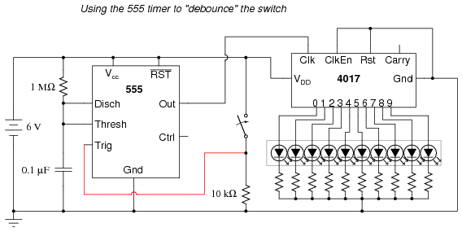
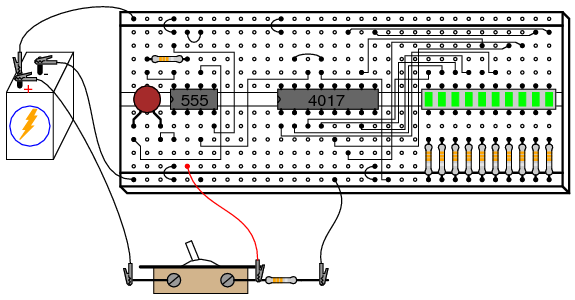
Tenga en cuenta que, dado que estamos utilizando el 555 una vez más para proporcionar una señal de reloj al 4017, debemos volver a conectar el pin 3 del chip 555 al pin 14 del chip 4017. Además, si ha alterado los valores de la resistencia o condensador en el circuito del temporizador 555, debe volver a los componentes originales de 1 MΩ y 0,1 µF.
Accione el interruptor nuevamente y observe el comportamiento de conteo del 4017. No debería haber más conteos "omitidos" como había antes, porque el temporizador 555 emite un pulso único y nítido por cadaencendido y apagadoactuación (¡observe la inversión de operación aquí!) del interruptor. Es importante que la sincronización del circuito 555 sea apropiada: el tiempo para cargar el capacitor debe ser mayor que el período de "asentamiento" del interruptor (el tiempo requerido para que los contactos dejen de rebotar), pero no tanto como para que el temporizador "perdiera" una secuencia rápida de accionamientos del interruptor, si ocurrieran.
Simple combination lock
PIEZAS Y MATERIALES
- 4001 quad NOR gate (Radio Shack catalog # 276-2401)
- 4070 quad XOR gate (Radio Shack catalog # 900-6906)
- Dos interruptores DIP de ocho posiciones (catálogo de Radio Shack # 275-1301)
- Dos diodos emisores de luz (catálogo de Radio Shack # 276-026 o equivalente)
- Cuatro diodos de "conmutación" 1N914 (catálogo de Radio Shack n.° 276-1122)
- Diez resistencias de 10 kΩ
- Dos resistencias de 470 Ω
- Interruptor de botón, normalmente abierto (catálogo de Radio Shack # 275-1556)
- Dos baterías de 6 voltios
¡Precaución!¡Tanto el IC 4001 como el 4070 son CMOS y, por lo tanto, sensibles a la electricidad estática!
Este experimento se puede construir usando solo un interruptor DIP de 8 posiciones, pero el concepto es más fácil de entender si se usan dos conjuntos de interruptores. La idea es que un interruptor actúa para contener el código correcto para desbloquear la cerradura, mientras que el otro interruptor sirve como punto de entrada de datos para la persona que intenta abrir la cerradura. En la vida real, por supuesto, el conjunto del interruptor con el código "llave" configurado debe estar oculto a la vista de la persona que abre la cerradura, lo que significa que debe estar ubicado físicamente.en otra partedesde donde está el conjunto del interruptor de entrada de datos. Esto requiere dos conjuntos de interruptores. Sin embargo, si entiende este concepto claramente, puede construir un circuito funcional con solo un interruptor de 8 posiciones, usando los cuatro interruptores de la izquierda para ingresar datos y los cuatro interruptores de la derecha para mantener el código "clave".
Para lograr un efecto adicional, elija diferentes colores de LED: verde para "Continuar" y rojo para "No ir".
REFERENCIAS CRUZADAS
Lecciones en circuitos eléctricos, Volumen 4, capítulo 3: "Puertas lógicas"
OBJETIVOS DE APRENDIZAJE
- Usando puertas XOR como comparadores de bits
- Cómo construir funciones de compuerta simples con diodos y una resistencia pull-up/down
- Uso de puertas NOR como inversores controlados
DIAGRAMA ESQUEMÁTICO
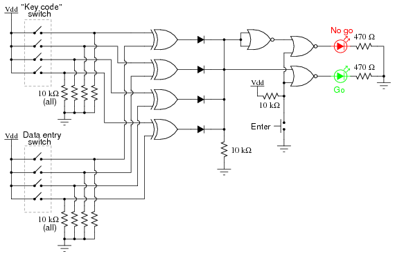
ILUSTRACIÓN
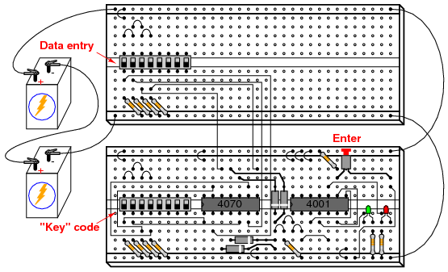
INSTRUCCIONES
Este circuito ilustra el uso de puertas XOR (OR exclusivo) como comparadores de bits. Cuatro de estas puertas XOR comparan los bits respectivos de dos números binarios de 4 bits, cada número "ingresado" en el circuito a través de un conjunto de interruptores. Si los dos números coinciden, bit por bit, el LED verde "Go" se iluminará cuando se presione el botón "Enter". Si los dos números no coinciden exactamente, el LED rojo "No ir" se iluminará cuando se presione el botón "Entrar".
Debido a que cuatro bits proporcionan apenas dieciséis combinaciones posibles, este circuito de cerradura no es muy sofisticado. Si se usara en una aplicación real, como un sistema de seguridad doméstico, la salida "No pasa" tendría que estar conectada a algún tipo de sirena u otro dispositivo de alarma, de modo que la entrada de un código incorrecto disuadiera a una persona no autorizada de intentar introducir otro código. De lo contrario, no tomaría mucho tiempo probar todas las combinaciones (0000 a 1111) hasta encontrar la correcta. En este experimento, no describo cómo integrar este circuito en un sistema de seguridad o mecanismo de bloqueo real, sino sólo cómo hacer que reconozca un código previamente ingresado.
El código "clave" que debe coincidir en el conjunto de interruptores de entrada de datos debe estar oculto a la vista, por supuesto. Si esto fuera parte de un sistema de seguridad real, el conjunto del interruptor de entrada de datos estaría ubicadoafuerala puerta y el conjunto del interruptor de código de llavedetrásla puerta con el resto del circuito. En este experimento, probablemente ubicará los dos conjuntos de interruptores en dos placas de prueba diferentes, pero es completamente posible construir el circuito utilizando un solo conjunto de interruptor DIP (8 posiciones). Nuevamente, el propósito del experimento no es crear un sistema de seguridad real, sino simplemente presentarle el principio de comparación del código de puerta XOR.
Es la naturaleza de una puerta XOR emitir una señal "alta" (1) si las señales de entrada sonnotel mismo estado lógico. Los terminales de salida de las cuatro puertas XOR están conectados a través de una red de diodos que funciona como una puerta OR de cuatro entradas: sianyde las cuatro puertas XOR emite una señal "alta", lo que indica que el código ingresado y el código clave no son idénticos, luego se pasará una señal "alta" a la lógica de la puerta NOR. Si los dos códigos de 4 bits son idénticos, entonces ninguna de las salidas de la puerta XOR será "alta" y la resistencia desplegable conectada a los lados comunes de los diodos proporcionará un estado de señal "baja" a la lógica NOR.
La lógica de la puerta NOR realiza una tarea simple: evitar que cualquiera de los LED se encienda si no se presiona el botón "Entrar". Sólo cuando se presiona este botón se puede energizar cualquiera de los LED. Si se presiona el interruptor Enter y todas las salidas XOR están "bajas", el LED "Go" se iluminará, indicando que se ha ingresado el código correcto. Si se presiona el interruptor Enter y cualquiera de las salidas XOR está "alta", el LED "No pasa" se iluminará, indicando que se ha ingresado un código incorrecto. Nuevamente, si se tratara de un sistema de seguridad real, sería prudente que la salida "No ir" hiciera algo que disuadiera a una persona no autorizada de descubrir el código correcto mediante prueba y error. En otras palabras, debería haber algún tipo depenapor ingresar un código incorrecto. ¡Deja que tu imaginación guíe el diseño de este detalle!
Contador binario de 3 bits
PIEZAS Y MATERIALES
- 555 timer IC (Radio Shack catalog # 276-1723)
- Un diodo de "conmutación" 1N914 (catálogo de Radio Shack n.º 276-1122)
- Dos resistencias de 10 kΩ
- Un capacitor de 100 µF (catálogo de Radio Shack # 272-1028)
- 4027 dual J-K flip-flop (Radio Shack catalog # 900-4394)
- LED de gráfico de barras de diez segmentos (catálogo de Radio Shack # 276-081)
- Tres resistencias de 470 Ω
- Una batería de 6 voltios
¡Precaución!El 4027 IC es CMOS y, por lo tanto, sensible a la electricidad estática.
REFERENCIAS CRUZADAS
Lecciones en circuitos eléctricos, Volumen 4, capítulo 10: "Multivibradores"
Lecciones en circuitos eléctricos, Volumen 4, capítulo 11: "Contadores"
OBJETIVOS DE APRENDIZAJE
- Usando el temporizador 555 como oscilador de onda cuadrada
- Cómo hacer un contador asíncrono usando flip-flops JK
DIAGRAMA ESQUEMÁTICO
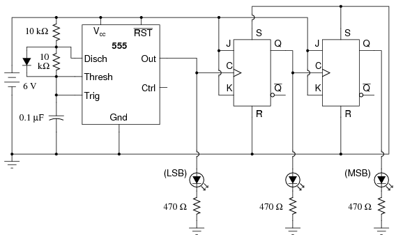
ILUSTRACIÓN
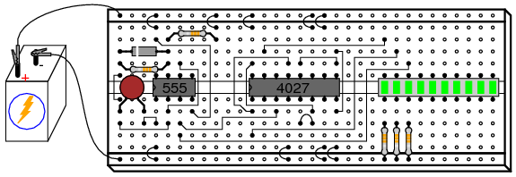
INSTRUCCIONES
En cierto sentido, este circuito "hace trampa" al utilizar sólo dos flip-flops J-K para crear un contador binario de tres bits. Normalmente, se usarían tres flip-flops, uno para cada bit binario, pero en este caso podemos usar el pulso de reloj (salida del temporizador 555) como un bit propio. Cuando construyas este circuito, encontrarás que es un contador "descendente". Es decir, su secuencia de conteo va de 111 a 110 a 101 a 100 a 011 a 010 a 001 a 000 y luego regresa a 111. Si bien es posible construir un contador "ascendente" usando flip-flops JK, esto requeriría componentes adicionales e introduciría más complejidad en el circuito.
El temporizador 555 funciona como un oscilador lento de onda cuadrada con un ciclo de trabajo de aproximadamente el 50 por ciento. Este ciclo de trabajo es posible mediante el uso de un diodo para "evitar" la resistencia inferior durante el ciclo de carga del capacitor, de modo que la constante de tiempo de carga sea solo RC y no 2RC como sería sin el diodo en su lugar.
Es muy recomendable, en este experimento como en todos los experimentos, construir el circuito en etapas: identificar partes del circuito con funciones específicas y construir esas partes una a la vez, probando cada una y verificando su rendimiento antes de construir la siguiente. Un error muy común de los nuevos estudiantes de electrónica es construir un circuito completo a la vez sin probar secciones del mismo durante el proceso de construcción, y luego enfrentarse a la posibilidad de tener varios problemas simultáneamente cuando llega el momento de finalmente aplicarle energía. Recuerde que una pequeña cantidad de atención adicional prestada a los detalles cerca del comienzo de un proyecto vale una enorme cantidad de trabajo de solución de problemas cerca del final. Los estudiantes que cometen el error de no probar partes del circuito antes de intentar operar todo el circuito a menudo piensan (falsamente) que el tiempo que llevaría probar esas secciones no vale la pena y luego lo gastan.díastratando de descubrir cuáles podrían ser los problemas con su experimento.
Siguiendo esta filosofía, primero construya el circuito del temporizador 555, incluso antes de conectar el IC 4027 a la placa de pruebas. Conecte la salida del 555 (pin #3) al LED de "Bit menos significativo" (LSB), para tener una indicación visual de su estado. Asegúrese de que la salida oscile en un patrón lento de onda cuadrada (el LED está "encendido" durante aproximadamente el mismo tiempo que está "apagado" en un ciclo) y que sea una señal confiable (sin comportamiento errático, sin pausas inexplicables). Si el temporizador 555 no funciona correctamente, ¡tampoco lo hará el resto del circuito contador! Una vez que se haya comprobado que el circuito del temporizador está en buen estado, proceda a enchufar el IC 4027 en la placa de pruebas y complete el resto de las conexiones necesarias entre él, el circuito del temporizador 555 y el conjunto de LED.
7-segment display
PIEZAS Y MATERIALES
- 4511 BCD-to-7seg latch/decoder/driver (Radio Shack catalog # 900-4437)
- Pantalla LED de cátodo común de 7 segmentos (catálogo de Radio Shack # 276-075)
- Interruptor DIP de ocho posiciones (catálogo de Radio Shack # 275-1301)
- Cuatro resistencias de 10 kΩ
- Siete resistencias de 470 Ω
- Una batería de 6 voltios
¡Precaución!El 4511 IC es CMOS y, por lo tanto, sensible a la electricidad estática.
REFERENCIAS CRUZADAS
Lecciones en circuitos eléctricos, Volumen 4, capítulo 9: "Funciones lógicas combinacionales"
OBJETIVOS DE APRENDIZAJE
- Cómo utilizar el CI de controlador de pantalla/decodificador de 7 segmentos 4511
- Familiarícese con el código BCD
- Cómo utilizar conjuntos de LED de 7 segmentos para crear pantallas de dígitos decimales
- Cómo identificar y utilizar entradas lógicas "activas-bajas" y "activas-altas"
DIAGRAMA ESQUEMÁTICO
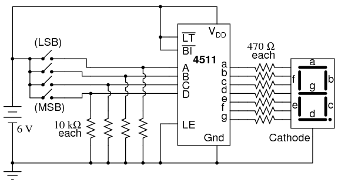
ILUSTRACIÓN
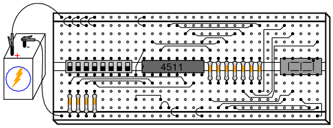
INSTRUCCIONES
Este experimento es más una introducción al IC decodificador/controlador de pantalla 4511 que una lección sobre cómo "construir" una función digital a partir de componentes de nivel inferior. Dado que las pantallas de 7 segmentos sonmuycomponentes comunes de los dispositivos digitales, es bueno estar familiarizado con los circuitos "impulsores" detrás de ellos, y el 4511 es un buen ejemplo de un controlador IC típico.
Su principio de funcionamiento es ingresar un valor BCD (decimal codificado en binario) de cuatro bits y energizar las líneas de salida adecuadas para formar el dígito decimal correspondiente en la pantalla LED de 7 segmentos. Las entradas BCD se denominan A, B, C y D en orden de menos significativas a más significativas. Las salidas están etiquetadas con a, b, c, d, e, f y g, y cada letra corresponde a una designación de segmento estandarizada para pantallas de 7 segmentos. Por supuesto, dado que cada segmento de LED requiere su propia resistencia de caída, debemos usar siete resistencias de 470 Ω colocadas en serie entre los terminales de salida del 4511 y los terminales correspondientes de la unidad de visualización.
La mayoría de las pantallas de 7 segmentos también incluyen un punto decimal (¡a veces dos!), un LED separado y un terminal designado para su funcionamiento. Todos los LED dentro de la unidad de visualización son comunes entre sí en un lado, ya sea cátodo o ánodo. El controlador de pantalla IC 4511 requiere una unidad de visualización de 7 segmentos de cátodo común, y eso es lo que se utiliza aquí.
Después de construir el circuito y aplicar energía, opere los cuatro interruptores en una secuencia de conteo binario (0000 a 1111), observando la pantalla de 7 segmentos. Una entrada 0000 debería dar como resultado una visualización de "0" decimal, una entrada 0001 debería dar como resultado una visualización de "1" decimal, y así sucesivamente hasta 1001 ("9 decimal"). ¿Qué sucede con los números binarios del 1010 (10) al 1111 (15)? Lea la hoja de datos del IC 4511 y vea lo que especifica el fabricante para el funcionamiento por encima de un valor de entrada de 9. En el código BCD, no hay un significado real para 1010, 1011, 1100, 1101, 1110 o 1111. Estos son valores binarios más allá del rango de un solo dígito decimal y, por lo tanto, no tienen ninguna función en un sistema BCD. El 4511 IC está diseñado para reconocer esto y emitir (¡o no emitir!) en consecuencia.
Tres entradas en el chip 4511 se han conectado permanentemente a Vddo tierra: "Prueba de lámpara", "Entrada de supresión" y "Activación de pestillo". Para saber qué hacen estas entradas, retire los puentes cortos que las conectan a cualquiera de los rieles de suministro de energía (¡uno a la vez!) y reemplace el puente corto con uno más largo que pueda llegar alotrocarril de suministro de energía. Por ejemplo, retire el puente corto que conecta la entrada "Latch Enable" (pin 5) a tierra y reemplácelo con un cable de puente largo que pueda llegar hasta el Vddcarril de suministro de energía. Experimente haciendo esta entrada "alta" y "baja", observando los resultados en la pantalla de 7 segmentos mientras modifica el código BCD con los cuatro interruptores de entrada. Una vez que haya aprendido cuál es la función de la entrada, conéctela al riel de suministro de energía para permitir el funcionamiento normal y proceda a experimentar con la siguiente entrada (ya sea "Prueba de lámpara" o "Entrada en blanco").
Una vez más, la hoja de datos del fabricante será informativa sobre el propósito de cada una de estas tres entradas. Tenga en cuenta que las etiquetas de entrada "Prueba de lámpara" (LT) y "Entrada de supresión" (BI) están escritas con barras de complementación booleanas sobre las abreviaturas. Los símbolos de barra designan estas entradas comoactivo-bajo, lo que significa que debes hacer que cada uno sea "bajo" para poder invocar su función particular. Hacer que una entrada activa baja sea "alta" coloca esa entrada en particular en un estado "pasivo" donde su función no será invocada. Por el contrario, la entrada "Latch Enable" (LE) no tiene una barra de complementación escrita sobre su abreviatura y, en consecuencia, se muestra conectada a tierra ("baja") en el esquema para no invocar esa función. La entrada "Latch Enable" es unaactivo-altoentrada, lo que significa que debe estar en "alto" (conectado a Vdd) para invocar su función.
Lecciones en circuitos eléctricoscopyright (C) 2002-2023 Tony R. Kuphaldt, según los términos y condiciones delCC BY License.